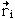
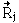

The Born-Oppenheimer ApproximationThe Born-Oppenheimer Approximation is the assumption that the electronic motion and the nuclear motion in molecules can be separated. It leads to a molecular wave function in terms of electron positions  and nuclear positions . This involves the following assumptions
|
Index Molecular spectra concepts | ||
|
Go Back |